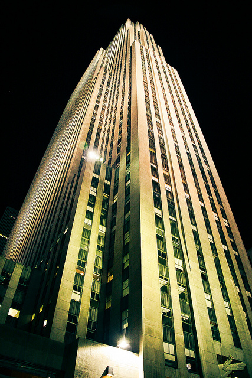

-
我的收藏
-
-
 Lewes Castle
Lewes Castle
Lewes Castle stands at the highest point of Lewes, East Sussex, England on an artificial
mound constructed with chalk blocks.
-
 Cliff
Cliff
A cliff is a mass of rock that rises very high and is almost
vertical, or straight up-and-down. Cliffs are very common landscape
features.
-

Rockefeller Center
New York City's historic landmark for dining and shopping in the
heart of Midtown Manhattan.
-
 Santa Maria Novella
Santa Maria Novella
Santa Maria Novella is a church in Florence, Italy, situated
opposite, and lending its name to, the city's main railway
station.
-
 Christ Church
Christ Church
Christ Church is a constituent college of the University of Oxford
in England.